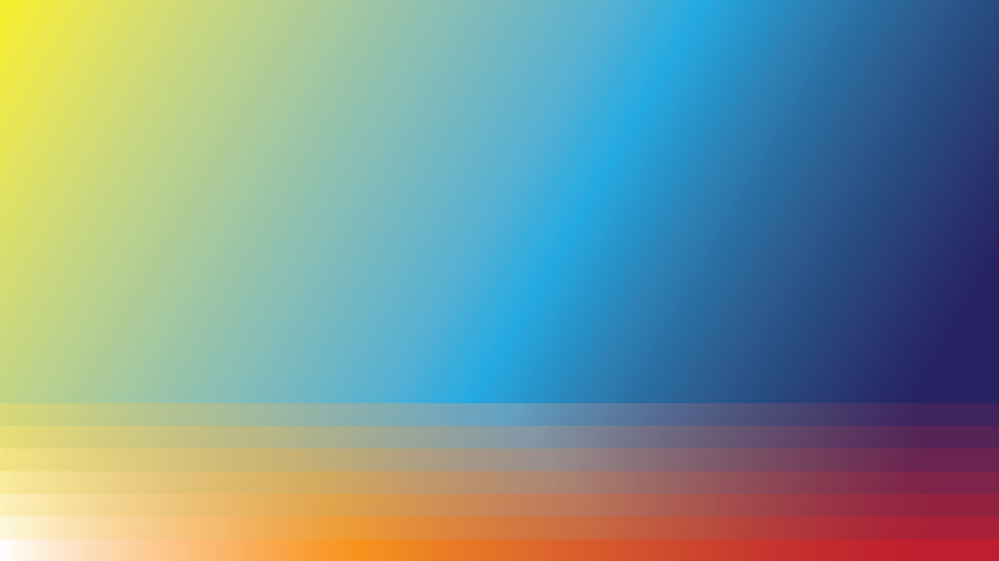

Writing Instruments and Human Expression Through Time
Artwork by Eric Murray
Over tens of thousands of years, the tools to create symbols and texts have affected our expression. People make marks, patterns, intricate patterns woven of meaning. These social objects are shared points of reference. And their form affects how concepts can be communicated. How clear, how fast, how deep. How ideas travel and how long the forms last. To communicate across space and time. Our connections allow us to experience more, to see the world from other centers of experience and to learn. Let’s trace a path through time and see how these instruments have helped humankind:
Assisted by an object:
burnt stick, stylus, pen
• writing on walls, pictorial
• writing on clay tablets with stylus, abstractions to represent numbers, then concepts, stories
• writing on papyrus, paper with ink, lighter and easier to transport, faster spread of ideas
• when all texts must be copied by hand: a great variety of spellings, diversity of language
Assisted by machines:
printing press, typewriter
• typesetting and mass production begins the standardization of word spellings, the spread of ideas, more access to knowledge, plus the creation of novels and the commercial sale of books, pamphlets, and newspapers
• with a typewriter, the author is a kind of typesetter, thinking of how the writing might appear in print, and for some practitioners the tool increases the speed they can put their words to paper
Assisted by computer:
word processing software
• endless copying of files, cut and copy and paste, allowing for easier changes to the text, quicker experimentation and iteration, more versioning, experimentation and faster evolution of forms
• smaller devices, on-screen keyboards leads to shorthand and unintentional typos that go out and continue circulating when they're funny or useful
Assisted by the internet:
search, resources, collaboration
• access to research, a quick discovery of facts and sources, even to describe in words a Google Street View of a place you've never been
• loss of variety in language groups as the dominant language of the internet derives largely from its country of origin and early development (and, speculating here, to become a dominant global superpower, China would use English)
• non-linear, hyperlinked text, for nonfiction as in Wikipedia
• shared online documents for multiple writers to create a single text
• hyperlinked non-linear stories, some Google Doc'd massively multi-author projects
Assisted by algorithms:
recognition, translation, text generation
• speech-to-text allowing quicker input on mobile devices; and facilitating the transcription of recorded interviews and oration
• machine translation, available in the browser and a bridge between cultures
• language modeling, by training an algorithm on vast stores of text to make predictions based on patterns learned from historical data, using powerful computer processing, and the programmatic rules of grammar and story structure to generate new combinations of words, unexpected combinations
• derive novelty and extract lines from generated text, the model could be an author's manuscript, say a writer inputs their first draft, their first published novel, all their books—any number of various inputs could be used as models for the generated text—and then they work from that as raw material, it has only unintentional meaning, and yet the author can project thoughts, like images in an inkblot, and see things in the generated text that can be teased out, the potential for combinations that the author didn't or might never have considered, but could make good and quick use of
• unclear of all the practical outcomes, no real idea how language modeling will affect forms across the board (imagine a school writing assignment, the teacher might request handwriting to encourage them to do the thinking themselves) but it's experimental use has a pretty straightforward application for creative writing
ENDNOTE
Often times, following characters and story keeps a reader going for hundreds of pages. After seeing a multi-author online story in a shared Google Doc, I considered some of the challenges of long-form non-linear narrative and asked: “How about a Wiki for storytelling? Wiki-novel: Progressive Storytelling and Modern Bookmaking.” This proposes a structure for multi-author work that could result in an easy to read, popular format—and a transition from the digital to printed book “edited together like a film” to make the story more accessible—rather than modernist prose in the manner of Ulysses and later James Joyce. Yet, a current crop of algorithms presents another form of constructive composition.
For example, a couple writing tools created with an OpenAI language model called GPT-2: AI Dungeon and
Talk to Transformer. AI Dungeon 2 is a generated text adventure that allows you to enter any action you can imagine “and the AI dungeon master will decide how the world responds to your actions.”
The words evoke images regardless of the algorithmic assembly—the kind of bizarre writing that poets would die for, now it's practically endless. With a machine writing prose poetry so fine, it’s an artistic tool that could be compared to the affect of photography on oil painting, except this time rather than compelling artists away from realism (to cubism, surrealism, abstraction), this places a premium on real, human voices. To actually say what you think, to express what you really feel and believe might hold the greater risk for artists. The symbols they will assemble to achieve this, the creation of the form, is the art.